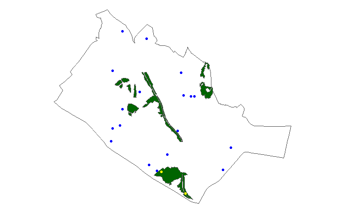

Animals: Survey Protocols
Edwin Tan
2022-01-07
Source:vignettes/more/animals-survey-protocols.Rmd
animals-survey-protocols.RmdThis article describes how surveys were carried out for the example data in this package, as well as how the data was recorded.
Pre-survey preparations
Sampling point generation
Before surveys can begin, survey points are randomly generated to best represent the area of interest. If new data is to be collected, survey points can be randomly generated with respect to the two land cover types: Urban and Forest.
The following example covers how the residential town of Queenstown can be randomly sampled at a point density of one point per 50 hectares, with a survey radius of 50 m for each point. An excess modifier of 1.5 can be set to generate 1.5 times the points that are required for the specified point density, in case any of the points were determined to be inaccessible later in the Survey Period.
First, load main libraries for this analysis.
Then, load and process the example dataset to retrieve the Queenstown data only.
data("sampling_areas")
queenstown <- sampling_areas[sampling_areas$area %in% "QT", ]
queenstown_forest <- queenstown[queenstown$landcover == "Forest",]Run random_pt_gen() with the above parameters and plot to visualise the generated points.
points <- random_pt_gen(x = queenstown, #function uses st_read, gives error here since sample is alr an sf obj
area_per_pt = 500000,
pt_buffer = 50,
forest = queenstown_forest,
excess_modifier = 1.5)
ggplot(data = queenstown) +
geom_sf(fill = NA) +
theme_void() +
geom_sf(data = queenstown_forest, fill = "darkgreen") +
geom_sf(data = points, col = ifelse(points$class == "Urban", "blue", "yellow"),
show.legend = "point")
If there is a need to retain survey points from a previous Survey Period, the example below shows how new points can be generated without overlap. Here, the file path to a shapefile with the previous survey points is given to the argument retain. Load the example points within the same area of Queenstown from period 1 to simulate point selection for re-surveying in a subsequent Survey Period 2. If only half of the previous points are to be retained, the proportion retain_prop can be set to "0.5".
data("sampling_points")
queenstown_retain <- sampling_points[sampling_points$area %in% "QT" & sampling_points$period %in% "1", ]
points <- random_pt_gen(x = queenstown,
area_per_pt = 500000,
pt_buffer = 50,
forest = queenstown_forest,
retain = queenstown_retain,
retain_prop = 0.5,
excess_modifier = 1.5)After obtaining the generated points, surveyors are to then assess the points and the surrounding areas up to the above buffer radius (50 m) for potential on-site disturbances to wild animals. Approved points are then selected according to the order in which they were generated (i.e. the point id) to maintain randomness.
Animal data collection format
To conduct new surveys or to build models on collected data, the format in which the data is organised for analysis is shown below. Animal data is separated into the survey data and survey info datasets, where the former includes the individual observation records and the latter contains meta information on each 30 minutes survey.
| survey_id | point_id | area | period | cycle | resampled | start_time | time | taxon | species | family | genus | abundance |
|---|---|---|---|---|---|---|---|---|---|---|---|---|
| 1 QTNa14a_P 1 Odonata | QTNa14a_P | QT | 1 | 1 | NA | 2016-08-04 14:00:00 | 2016-08-04 14:01:00 | Odonata | Rhyothemis phyllis | Libellulidae | Rhyothemis spp. | 3 |
| 1 QTNa14a_P 1 Odonata | QTNa14a_P | QT | 1 | 1 | NA | 2016-08-04 14:00:00 | 2016-08-04 14:12:00 | Odonata | Crocothemis servilia | Libellulidae | Crocothemis spp. | 1 |
| 1 QTNa14a_P 1 Odonata | QTNa14a_P | QT | 1 | 1 | NA | 2016-08-04 14:00:00 | 2016-08-04 14:15:00 | Odonata | Neurothemis fluctuans | Libellulidae | Neurothemis spp. | 1 |
| 1 QTNa14a_P 1 Odonata | QTNa14a_P | QT | 1 | 1 | NA | 2016-08-04 14:00:00 | 2016-08-04 14:23:00 | Odonata | Crocothemis servilia | Libellulidae | Crocothemis spp. | 1 |
| 1 QTNa14a_P 1 Odonata | QTNa14a_P | QT | 1 | 1 | NA | 2016-08-04 14:00:00 | 2016-08-04 14:28:00 | Odonata | Neurothemis fluctuans | Libellulidae | Neurothemis spp. | 1 |
| 1 QTNb1a_P 1 Odonata | QTNb1a_P | QT | 1 | 1 | NA | 2016-08-04 14:44:00 | 2016-08-04 14:44:00 | Odonata | Neurothemis fluctuans | Libellulidae | Neurothemis spp. | 1 |
| survey_id | point_id | area | period | cycle | taxon | resampled | start_time | notes |
|---|---|---|---|---|---|---|---|---|
| 1 QTNa14a_P 1 Odonata | QTNa14a_P | QT | 1 | 1 | Odonata | NA | 2016-08-04 14:00:00 | NA |
| 1 QTNb1a_P 1 Odonata | QTNb1a_P | QT | 1 | 1 | Odonata | NA | 2016-08-04 14:44:00 | NA |
| 1 QTNa14a_P 1 Amphibia | QTNa14a_P | QT | 1 | 1 | Amphibia | NA | 2016-08-04 19:55:00 | NA |
| 1 QTNb1a_P 1 Amphibia | QTNb1a_P | QT | 1 | 1 | Amphibia | NA | 2016-08-04 20:40:00 | NA |
| 1 PGT15 1 Aves | PGT15 | PG | 1 | 1 | Aves | NA | 2016-08-08 07:00:00 | NA |
| 1 PGT14 1 Aves | PGT14 | PG | 1 | 1 | Aves | NA | 2016-08-08 07:33:00 | NA |
Animal survey methods
The general animal survey protocol consisted of 30 minute surveys in the designated buffer radius around the generated points once every two months for a year (6 cycles per Survey Period). Surveyors can move within the area to identify and count any species belonging to the priority taxon of each survey. Each encounter is recorded according to the species, with further details on the time, abundance and distance from center point.

Figure: Diagram of animal surveys within the respective buffer radii. Data recorded for each species observation is also shown here.
Survey time windows and buffer radii varies for each priority taxon and they were chosen based on previous research. The four priority animal taxa surveyed and included in the example data are shown in the table below with their specific survey details.
| Taxon | Time | Radius (m) |
|---|---|---|
| Birds | 0700–0930 | 50 |
| Butterflies | 0930–1200 | 20 |
| Odonates | 1400–1600 | 20 |
| Amphibians | 2000–2200 | 20 |
For ephemeral water points, odonate and amphibian surveys were conducted within 24 hours after a rain event at the sampling point. The rain event had to be of at least a light–moderate intensity with reference to the Meteorological Service Singapore’s live map of Rain Areas.
Plant survey methods
Plant surveys were split into two types according to the Urban or Forest land-cover where the plants are located.
Urban plant surveys were conducted within the same 50m radius of the animal survey points. Cultivated trees, palms, shrubs and turf were mapped manually on-site and identified to the species-level. For digitising in geographic information system (GIS) software, trees and palms were drawn as Point layers while shrubs and turfs were drawn as Polygon layers.
Figure: Original satellite imagery of the point (left) and manually-mapped vegetation digitised in QGIS (right).
Forest plant surveys were dependent on existing forest patches in the sampling areas. Available maps and satellite images were first checked for natural vegetation cover that were unmanaged within the sampling area boundaries. After locating such patches, surveys were then carried out to identify all unique vascular plant species present. Surveyors would also trace the existing outlines of these forest patches by walking the perimeter with a Global Positioning System (GPS) device. Plant specimens were collected if they were not identifiable on-site and photographs were taken of plants that were out-of-reach.
Locations of any ‘rare’ plant species identified were recorded with the GPS. These include species that were not locally cultivated, and ‘critically endangered’ or ‘extinct’ according to the Singapore Red Data Book, 2nd Edition (Davison et al., 2008).